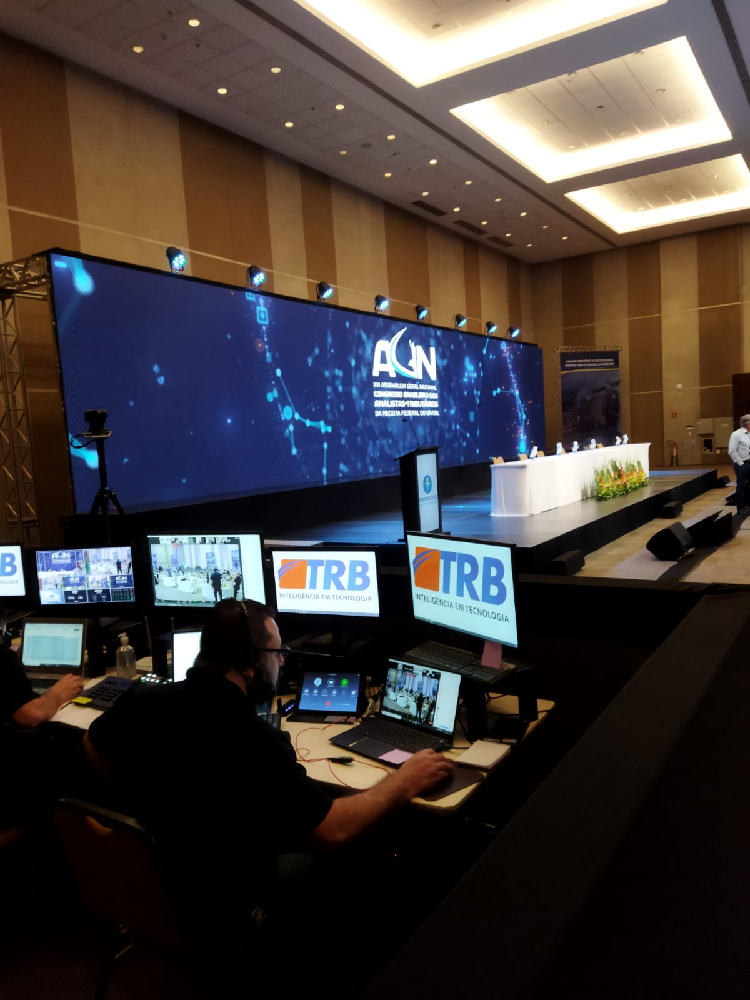
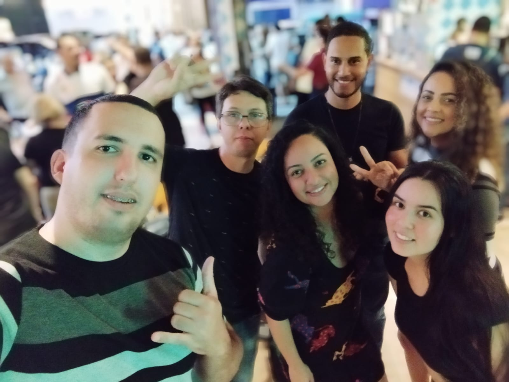

Currículo
Minha trajetória profissional em TI — do suporte técnico à Ciência de Dados e Desenvolvimento.
Sobre mim
Profissional com mais de 10 anos em Tecnologia da Informação. Passei por suporte, infraestrutura e governança em ambientes corporativos e governamentais. Hoje foco em Python, bancos de dados, automação com n8n e desenvolvimento de sistemas web.
Localização: São Sebastião, Brasília - DF
Formação atual: Desenvolvimento de Sistemas (IFB) e Pós em TI/Mainframe (SENAC)
Linha do tempo
-
2026 — Em andamento
Desenvolvimento de Sistemas (IFB)
Curso técnico em andamento. Aprofundamento em programação, estruturas de dados e desenvolvimento web.
-
2024 — 2025
Graduação em Ciência de Dados (SENAC)
Formação concluída com foco em análise de dados, estatística e fundamentos de machine learning.
-
Abr/2014 — Mai/2022
Técnico de Suporte em TI — MDR
Ministério do Desenvolvimento Regional. Suporte a usuários, redes, VoIP, videoconferência, Active Directory e documentação alinhada à ITIL 4.
-
Mar/2011 — Abr/2014
Analista de Requisitos — Caixa Seguros
Análise de requisitos, suporte ao sistema MAC, indicadores de performance e treinamentos para usuários.
-
Fev/2010 — Mar/2011
Técnico em Informática — H2 Informática
Suporte técnico, atendimento ao público e montagem de laboratórios de informática em Goiás.
Certificações e cursos
- ITIL 4 Foundation UniCIT — exame oficial agendado para 29/04/2026
- AWS Academy Cloud Foundations AWS Academy — CloudFormation (Credly Badge)
- Scrum Foundation Learner Certiprof (Credly Badge)
- Curso n8n — Automação de Workflows Hashtag Treinamentos — concluído
- Full Stack Impressionador Hashtag Treinamentos — em andamento
- Fundamentos COBIT 5.0 e PROBARE UniCIT
- MS-102T00-A: Administrador Microsoft 365 UniCIT
- Excel Avançado Eibneti
- Montagem, Configuração e Manutenção de Micros e Notebooks SENAC
- Inglês Técnico / Básico Conversação: básica | Leitura e escrita: intermediária
Momentos da jornada

